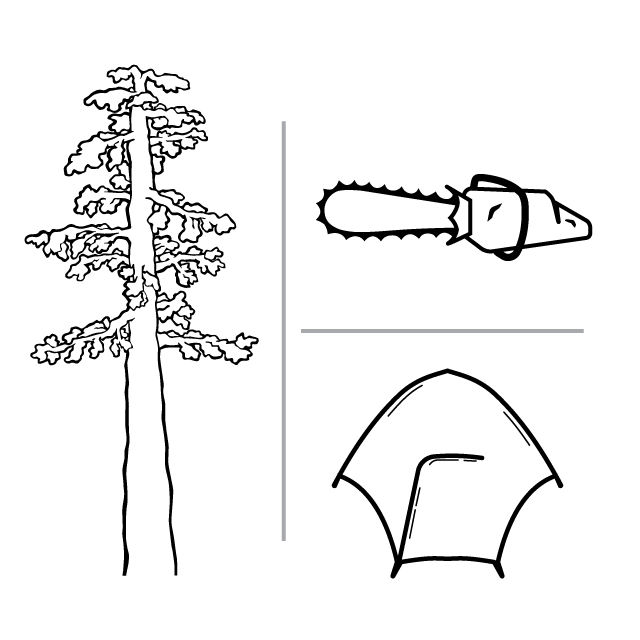
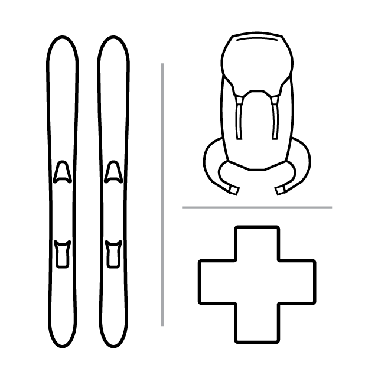
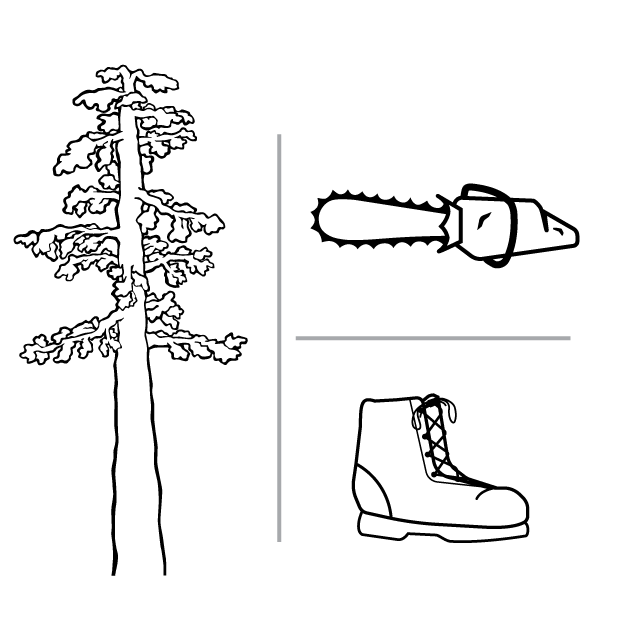
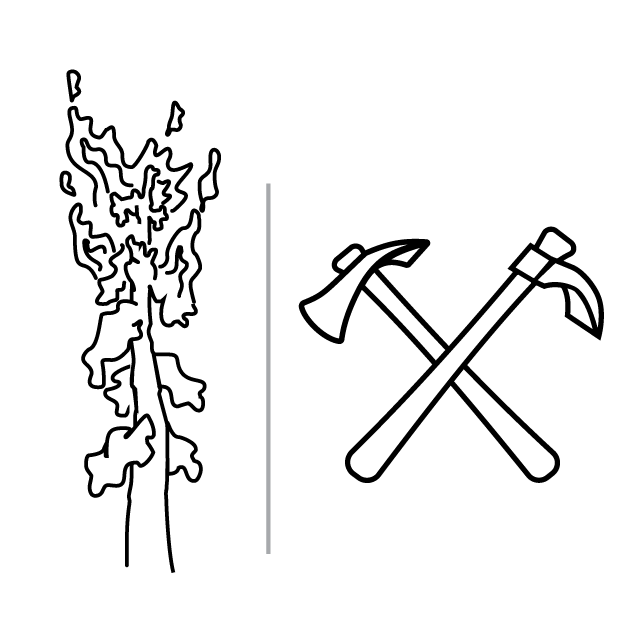
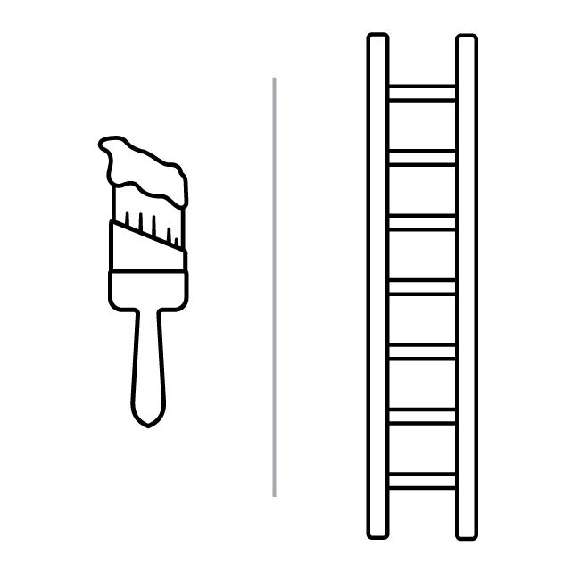
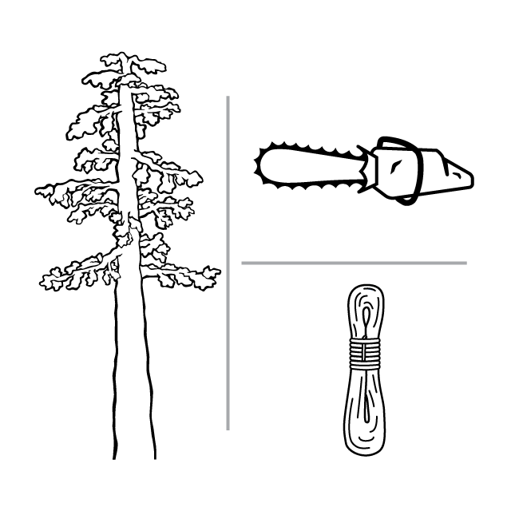

Outdoor Work Resume
I have had many different jobs in my short time so far. As I changed employers and fields with some regularity, I felt like was starting from the beginning with every change. Realizing this I knew that my advancement would rely on my ability to recognize the abstract lessons that could be applied across any work environment. This deliberate approach to the way I have thought about my experience has allowed me to recognize applicable lessons from wildland firefight to graphic design. Below is a list of some of the jobs I have held since graduating college and a piece of the universal lessons I was able to learn while in each position.

Rocky Mountain Youth Corps
Steamboat Springs, CO Summer / Fall 2009
During this time period I was able to get skilled with a chainsaw in a short period of time. It was a major mental victory to go from being slightly terrified of this implement of destruction to being totally comfortable with it in my hands. During this time I reveled in working with people that lived a very different life than me up to that point, and I learned a great deal about how to interact with people I don’t agree with, especially when they are in the position of power.

The Canyons Ski Resort
Park City, UT Winter 2009 10 / 2010 11
Mount Hood Meadows Ski Resort
Mount Hoood, OR Winter 2011 12 / 2012 13
The most rewarding job I ever expect to have. The pay is low, the work is hard, but the sense of purpose is strong nearly every day. You become at home in states of discomfort. Your co-workers become your family. The community is strong and something I will always be looking for again. My time on ski patrol set the bar for how I want to feel about my life and what I am doing on a daily basis.

The Canyons Ski Resort
Park City, UT Summer / Fall 2010
Seasonal towns can be difficult for employment. It takes time to get a year round gig in one location. After my first winter season in Park City I found myself on a path to year round employment at the ski resort. Thinning the woods during the summer and skiing them during the winter. I learned a great deal, but the largest lesson was that I was able to walk away from this ski bum dream to chase the love of my life.

Miller Timber Services
Philomath, OR Summer / Fall 2011
To be given a chance you need to show that you are worth the shot. There is a competition for differentiation in most jobs. Working for a private company that gets contracted to state or federal forest fires, there is a hierarchy of crew quality. The federal crews had to be of a higher caliber, and there is a limit to new firefighters aloud on a crew. I have always thought the quality of an experience can be enhanced or diminished by those around you, so I made sure to get myself noticed by those that could enhance my experience.

Fitzpatrick Painting
Albany, OR Summer / Fall 2012
Painting houses during the summer is challenging and fast paced work. It takes an attention to detail and a simultaneous focus on production speed. Although lessons in work ethic were powerful, the greater lessons I learned came from working alongside people that came from different backgrounds than my own. I found this experience invaluable, developing my own ability for empathy.

St. Croix SavaTree
Hopkins, MN 2013
Sometimes the lesson learned is a bitter pill to swallow. This was a rewarding job that reaffirmed my ability to work at a high skill level in stressful situations. But unfortunately this great experience was prematurely ended with a bitter lesson in how not to treat people. These lessons are best learned from up close, but better to be observed from a distance.